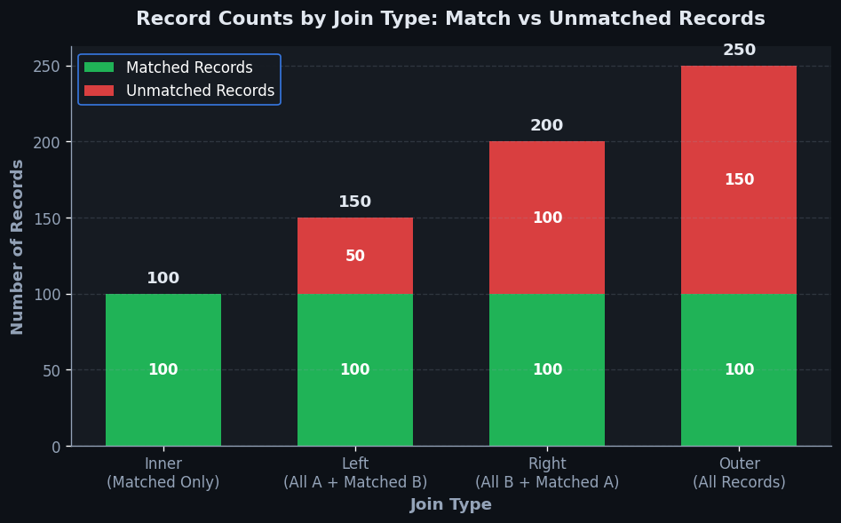
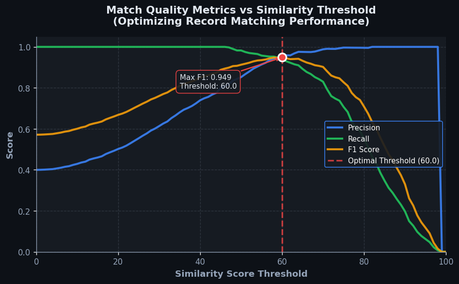

Match Records#
The 60-Second Version#
What it does: Match Records combines information from two or more tables by linking rows that share common identifiers, like customer IDs or product codes.
When to use it: Use it when the data you need is scattered across multiple systems—for example, customer contact details live in one database while purchase history lives in another, and you need both together to answer your question.
What you get back: A single unified table where each row contains merged information from all source tables, ready for analysis, reporting, or modeling.
Difficulty |
Easy |
Typical runtime |
Seconds on 100K rows |
What you bring |
Two or more tables with at least one shared column containing matching values |
What you get |
A combined table with columns from all inputs, joined where key values align |
Heuristix bucket |
Explore — Shaping & Transforming Data |
The one thing to remember: Not all records from your tables may appear in the final result—the type of match you choose determines which rows survive the merge.
Learning Objectives#
After reading this chapter, a business user will be able to:
Identify situations where matching records across datasets will answer your business question—such as enriching customer profiles with transaction history, reconciling vendor invoices with purchase orders, or combining survey responses with demographic data.
Read a match summary report and explain to stakeholders how many records linked successfully, how many remain unmatched, and what those patterns reveal about data quality or business processes.
Decide whether to investigate unmatched records as potential data issues, accept them as expected exceptions, or escalate findings that indicate systematic problems in upstream data collection.
After reading this chapter, a data scientist will be able to:
Execute all four join types (inner, left, right, full outer) correctly and select the appropriate type based on whether you need to preserve unmatched records from either dataset.
Configure composite matching keys by combining multiple fields and apply preprocessing steps (trimming whitespace, standardizing case, handling nulls) to maximize valid matches while avoiding false positives.
Diagnose duplicate key violations, detect many-to-many join explosions before they corrupt your analysis, and validate join results by comparing input and output row counts against expected cardinality.
Overview#
Match Records is a data transformation technique that identifies and links observations across two or more datasets based on shared key values or composite identifiers. It belongs to the family of relational join operations—foundational methods for combining information dispersed across multiple tables into unified analytical datasets. At its core, Match Records implements set-theoretic operations on tabular data, enabling analysts to enrich, filter, and consolidate records by leveraging the mathematical principles of relational algebra.
When to Use This#
Use this when:
Enriching transactional data with reference attributes — You have a table of sales transactions with product codes and need to attach product descriptions, categories, and margins from a separate product master table.
Consolidating customer information across systems — Your CRM contains customer demographics while your billing system holds payment history; matching on customer ID creates a unified customer view.
Filtering records to a specific population — You want to restrict your analysis to customers who appear in a target segment list, effectively using the match operation as a membership test.
Identifying orphan records for data quality assessment — You need to find transactions that reference non-existent products or customers by detecting which records fail to match against reference tables.
Building analytical base tables from normalised databases — Your source data follows third normal form with information spread across multiple tables; matching reconstructs the denormalised structure required for modelling.
Temporal joins for event attribution — You must attach the most recent customer attributes or campaign exposures to each transaction based on effective dates and keys.
Hierarchical rollups requiring parent attributes — Individual store records need regional and divisional attributes from an organisational hierarchy table for aggregated reporting.
Do NOT use this when:
Keys are ambiguous or non-unique when they should be — If your lookup table contains duplicate keys, the match will produce unintended row multiplication. Clean the reference data first.
You need approximate or fuzzy matching — When keys contain typos, formatting variations, or require similarity-based linkage, use probabilistic record linkage methods instead.
The datasets share no common identifier — Without a logical key relationship, matching is undefined. Consider whether a cross-join or distance-based matching is appropriate.
Questions This Answers#
Customer & Relationship Intelligence#
Which customers who bought from us last year haven’t placed an order yet this quarter?
Are the customers complaining on social media the same ones calling our support line, or are we dealing with two different groups?
Which of our enterprise accounts are also working with our competitors, and what’s their spending pattern across both of us?
Can we identify which leads from the conference actually converted to paying customers within 90 days?
How many of our loyalty program members also have open support tickets, and are they at risk of churning?
Financial & Operational Reconciliation#
Why do we show 847 transactions in our payment system but only 702 in our accounting ledger?
Which invoices from last month are still missing corresponding shipping records?
Are employees submitting expense reports for corporate card charges we can’t find in the bank feed?
Which purchase orders have been received and invoiced but not yet marked as paid in our AP system?
Performance & Attribution Analysis#
Did the customers who attended our webinar series spend more than those who only got email campaigns?
Which sales reps are winning deals in territories where we’ve also invested in digital advertising versus those going it alone?
Are products returned for defects the same ones that took longer than 10 days to ship, or is quality unrelated to fulfillment speed?
Which marketing campaigns drove leads that actually closed, and what was the revenue six months later versus the campaign cost?
How It Works#
Imagine you’re planning a wedding and you have two spreadsheets: one from your caterer listing each guest’s meal preference (organized by confirmation number), and another from your venue coordinator listing table assignments (also by confirmation number). You need to create place cards showing both the table number and meal choice for each guest. You can’t just stack these spreadsheets on top of each other—that would be chaos. Instead, you go through each confirmation number, find the matching entry in both lists, and pull the information together onto one card. That’s exactly what Match Records does: it takes two separate tables, finds rows that share a common identifier, and combines their information into a single, enriched dataset.
BEFORE MATCHING
Orders Table Customers Table
┌─────────┬─────────┐ ┌─────────┬──────────┐
│ OrderID │ CustID │ │ CustID │ Name │
├─────────┼─────────┤ ├─────────┼──────────┤
│ 1001 │ C42 │ │ C42 │ Alice │
│ 1002 │ C15 │ │ C15 │ Bob │
│ 1003 │ C42 │ │ C99 │ Carol │
└─────────┴─────────┘ └─────────┴──────────┘
↓ ↓
└──────────┬───────────┘
↓
MATCH on CustID
AFTER MATCHING (Inner Join)
┌─────────┬─────────┬──────────┐
│ OrderID │ CustID │ Name │
├─────────┼─────────┼──────────┤
│ 1001 │ C42 │ Alice │
│ 1002 │ C15 │ Bob │
│ 1003 │ C42 │ Alice │
└─────────┴─────────┴──────────┘
(Carol dropped—no matching orders)
Step 1: Identify the key columns. The algorithm first identifies which column(s) will serve as the matching criteria—the “key” that links records across tables. In our example, both tables contain a customer ID field. This shared identifier becomes the bridge between datasets.
Step 2: Scan the primary table. The process begins with the first table (often called the “left” table) and examines each row one at a time. For order 1001, it extracts the customer ID value: C42.
Step 3: Search for matches in the secondary table. Taking that customer ID, the algorithm searches through the second table (the “right” table) looking for any rows where the customer ID also equals C42. It finds one: Alice.
Step 4: Combine matching information. When a match is found, the algorithm creates a new row in the output table that contains columns from both original tables. Order 1001 now appears alongside the customer name Alice.
Step 5: Handle non-matches according to join type. If no match exists, the behavior depends on the join type you’ve chosen. An inner join discards unmatched rows entirely (Carol disappears because she has no orders). A left join keeps all rows from the first table, leaving gaps where no match exists. A right join does the opposite.
Step 6: Repeat for all rows. The algorithm continues this scan-search-combine process for every row in the primary table, building up the final matched dataset one record at a time.
The key insight: Match Records works because real-world information about the same entity is often scattered across multiple systems, and shared identifiers create a mathematical bridge that lets us reunite fragmented data into complete, actionable records.
The Intuition#
Imagine you are a librarian maintaining two card catalogues. The first catalogue lists every book in the library by its unique ISBN, along with the book’s title and author. The second catalogue tracks borrowing records—each entry contains an ISBN, a borrower’s name, and a return date. Neither catalogue alone answers the question “Who borrowed War and Peace?”—but by matching entries across catalogues using ISBN as the common thread, you can weave together the complete story.
This is precisely what Match Records accomplishes. It takes two tables that each know something partial about the world and produces a unified table that knows both things simultaneously. The matching key—like the ISBN—serves as the thread that stitches the tables together. When a borrowing record’s ISBN appears in the book catalogue, we pull across the title and author to enrich that borrowing record. When it doesn’t appear (perhaps due to a data entry error), we have discovered an orphan—valuable information in itself.
The power of matching lies in its declarative simplicity: you specify what to match on, and the operation handles the how. Behind the scenes, the system aligns records by sorting, hashing, or indexing the key columns, then systematically pairs records whose keys agree. The result is a new table where each row represents a successful (or, depending on the join type, unsuccessful) pairing. This simple mechanism underpins virtually every analytical workflow that draws from multiple data sources—which is to say, virtually every real-world analytical workflow.
The Mathematics#
Formal Setup and Notation#
Let \(R\) and \(S\) denote two relations (tables) with schemas:
where \(A_i\) and \(B_j\) represent attributes (columns). We assume there exists a subset of attributes that serve as the join key. Without loss of generality, let the join key in \(R\) be \(K_R \subseteq \{A_1, \ldots, A_m\}\) and in \(S\) be \(K_S \subseteq \{B_1, \ldots, B_n\}\), where \(|K_R| = |K_S| = k\).
A tuple \(r \in R\) matches a tuple \(s \in S\) if and only if their key values are equal:
where \(r[K_R]\) denotes the projection of tuple \(r\) onto the key attributes.
Join Types as Set Operations#
The inner join (equi-join) produces only matched pairs:
The left outer join preserves all tuples from \(R\), padding with nulls where no match exists:
where \(\omega\) represents a tuple of null values with schema \((B_1, \ldots, B_n)\).
The right outer join is symmetric:
The full outer join preserves all tuples from both relations:
Cardinality Analysis#
Let \(|R| = n_R\) and \(|S| = n_S\). Define the selectivity of the join as:
For a key that is unique in \(S\) (i.e., \(S\) is a lookup table), the output cardinality of an inner join is bounded:
When keys are non-unique in both relations, the worst-case cardinality is:
This occurs when every tuple in \(R\) matches every tuple in \(S\)—the degenerate case of a Cartesian product induced by a constant or missing key.
Assumptions#
Key comparability: The key attributes in \(R\) and \(S\) must be drawn from the same domain and be comparable under equality.
Key integrity in lookup tables: When \(S\) serves as a reference table, each key value should appear at most once. Violations produce fan-out (row multiplication).
Null handling: Null key values do not match other nulls under standard SQL semantics. Records with null keys will not match unless explicitly handled.
Determinism: The join operation is deterministic—given the same inputs, it produces the same output.
Computational Complexity#
Naive nested-loop join has complexity \(O(n_R \times n_S)\). Practical implementations use:
Hash join: \(O(n_R + n_S)\) average case, with \(O(n_S)\) space for the hash table on the smaller relation.
Sort-merge join: \(O(n_R \log n_R + n_S \log n_S)\) for sorting, then \(O(n_R + n_S)\) for merging.
Relationship to Other Methods#
Match Records implements exact matching on discrete keys. It is a special case of the broader join family:
Fuzzy matching relaxes exact equality to similarity thresholds
Cross joins omit the key constraint entirely
Semi-joins return only the existence of a match, not the matched attributes
Anti-joins return records that fail to match
Understanding the Mathematics#
Set-Theoretic Join Operations#
The equation:
Read it aloud:
“A join of tables R and S is the set of all combined records t, where each t is made by merging a row r from table R with a row s from table S, but only when the join condition θ evaluates to true for that pair.”
What each symbol means:
\(R\) and \(S\) = two tables you’re trying to match
\(\bowtie_{\theta}\) = the join operator with condition θ
\(t\) = a resulting matched record
\(r \cup s\) = merge row r and row s into one combined row
\(\theta(r,s)\) = the matching rule (e.g., “customer ID matches”)
\(\in\) = “is a member of” or “belongs to”
A concrete numerical example:
Table R (Orders): Customer ID 1001, Order Total \(450. Table S (Customers): Customer ID 1001, Name "Alice Chen". Condition θ: Customer ID from R equals Customer ID from S. Check: 1001 = 1001? Yes, true. Result t: Customer ID 1001, Order Total \)450, Name “Alice Chen” — all three columns merged into one row.
Why this equation matters:
This defines exactly which rows survive a match operation and prevents accidental data duplication or loss when combining business datasets.
Inner Join Cardinality#
The equation:
Read it aloud:
“The number of rows in a joined table is at most the number of rows in R multiplied by the number of rows in S.”
What each symbol means:
\(|R|\) = count of rows in table R
\(|S|\) = count of rows in table S
\(|R \bowtie S|\) = count of rows in the matched result
\(\times\) = multiplication
\(\leq\) = less than or equal to
A concrete numerical example:
You have 500 orders (R) and 200 customers (S).
Maximum possible joined rows: 500 × 200 = 100,000.
Actual joined rows after matching on Customer ID: 500 (because each order matches exactly one customer).
The inequality holds: 500 ≤ 100,000.
Why this equation matters:
This upper bound lets you predict memory requirements and runtime before executing expensive joins — critical when working with datasets containing millions of records.
Left Join Preservation#
The equation:
Read it aloud:
“The number of rows in a left join equals the number of rows in the left table R.”
What each symbol means:
\(\mathrel{\text{⟕}}\) = left join operator
\(|R|\) = row count in left table
\(|R \mathrel{\text{⟕}} S|\) = row count after left join
A concrete numerical example:
Table R has 1,200 store transactions.
Table S has 800 loyalty program members.
After a left join on Customer ID: still exactly 1,200 rows.
Matched customers get their name filled in; non-members show NULL in the name column.
Why this equation matters:
Left joins guarantee no transaction records disappear from your analysis — essential when every row represents revenue or a compliance-required audit trail.
Key Collision Probability#
The equation:
Read it aloud:
“The probability that at least two records share the same join key equals one minus n factorial divided by the quantity n minus k factorial times n to the power k.”
What each symbol means:
\(n\) = number of possible unique key values
\(k\) = number of records in your dataset
\(n!\) = n factorial (n × (n-1) × … × 1)
\(P(\text{collision})\) = chance of duplicates
A concrete numerical example:
You auto-generate order IDs using 4-digit numbers (n = 10,000 possible IDs).
You process k = 150 orders today.
P(collision) = 1 - [10,000!/(9,850)! × 10,000^150] ≈ 1 - 0.893 = 0.107.
There’s a 10.7% chance two orders get the same ID — unacceptable for financial records.
Why this equation matters:
This warns you when your key generation scheme will break, forcing a switch to longer IDs before data integrity failures occur in production.
The Big Picture#
The mathematics of Match Records formalizes what “combining tables correctly” actually means. Set theory provides the rigorous definition of which row combinations are valid, while cardinality bounds predict computational costs before you execute queries on production databases. Join preservation equations guarantee data isn’t silently dropped during transformations — a mistake that could hide $10M in revenue from executive dashboards. The collision probability formula protects key uniqueness, the invisible foundation everything else relies on. We use this particular mathematical framework because relational algebra is composable: you can chain joins, prove properties about the result, and optimize execution order — benefits impossible with ad-hoc scripting. In essence: these equations are the difference between “it worked on my sample data” and “it’s mathematically guaranteed to work at enterprise scale.”
Python Implementation#
import pandas as pd
import numpy as np
# =============================================================================
# Example 1: Basic Inner Join — Enriching Transactions with Product Details
# =============================================================================
# Create synthetic transaction data
np.random.seed(42)
transactions = pd.DataFrame({
'transaction_id': range(1, 101),
'product_code': np.random.choice(['P001', 'P002', 'P003', 'P004', 'P005'], 100),
'quantity': np.random.randint(1, 10, 100),
'customer_id': np.random.randint(1000, 1050, 100)
})
# Create product reference table (lookup table with unique keys)
products = pd.DataFrame({
'product_code': ['P001', 'P002', 'P003', 'P004', 'P005'],
'product_name': ['Widget A', 'Widget B', 'Gadget X', 'Gadget Y', 'Component Z'],
'unit_price': [25.00, 30.00, 45.00, 50.00, 12.50],
'category': ['Widgets', 'Widgets', 'Gadgets', 'Gadgets', 'Components']
})
# Perform inner join to enrich transactions with product details
enriched_transactions = pd.merge(
transactions, # Left table (transactions to enrich)
products, # Right table (lookup table)
on='product_code', # Join key
how='inner' # Join type: only matched records
)
# Calculate total revenue per transaction
enriched_transactions['revenue'] = (
enriched_transactions['quantity'] * enriched_transactions['unit_price']
)
print("=== Inner Join: Enriched Transactions ===")
print(f"Input transactions: {len(transactions)}")
print(f"Output records: {len(enriched_transactions)}")
print(enriched_transactions.head(10))
print(f"\nTotal revenue: ${enriched_transactions['revenue'].sum():,.2f}")
# =============================================================================
# Example 2: Left Join — Detecting Orphan Records
# =============================================================================
# Add some transactions with invalid product codes
transactions_with_errors = transactions.copy()
transactions_with_errors.loc[0:4, 'product_code'] = 'P999' # Non-existent product
# Left join preserves all transactions, including orphans
matched_with_orphans = pd.merge(
transactions_with_errors,
products,
on='product_code',
how='left', # Preserve all left-side records
indicator=True # Add column showing match status
)
# Identify orphan records (no match found)
orphans = matched_with_orphans[matched_with_orphans['_merge'] == 'left_only']
print("\n=== Left Join: Orphan Detection ===")
print(f"Total transactions: {len(transactions_with_errors)}")
print(f"Matched transactions: {len(matched_with_orphans[matched_with_orphans['_merge'] == 'both'])}")
print(f"Orphan transactions: {len(orphans)}")
print("\nOrphan records (invalid product codes):")
print(orphans[['transaction_id', 'product_code', 'quantity']])
# =============================================================================
# Example 3: Composite Key Join — Multi-Column Matching
# =============================================================================
# Create regional sales data
sales = pd.DataFrame({
'region': ['North', 'North', 'South', 'South', 'East', 'East'],
'quarter': ['Q1', 'Q2', 'Q1', 'Q2', 'Q1', 'Q2'],
'revenue': [150000, 175000, 200000, 210000, 125000, 140000]
})
# Create regional targets (composite key: region + quarter)
targets = pd.DataFrame({
'region': ['North', 'North', 'South', 'South', 'East', 'East'],
'quarter': ['Q1', 'Q2', 'Q1', 'Q2', 'Q1', 'Q2'],
'target': [160000, 180000, 190000, 220000, 130000, 150000]
})
# Join on composite key
sales_vs_target = pd.merge(
sales,
targets,
on=['region', 'quarter'], # Composite key (multiple columns)
how='inner'
)
# Calculate variance to target
sales_vs_target['variance'] = sales_vs_target['revenue'] - sales_vs_target['target']
sales_vs_target['variance_pct'] = (
sales_vs_target['variance'] / sales_vs_target['target'] * 100
).round(1)
print("\n=== Composite Key Join: Sales vs Targets ===")
print(sales_vs_target)
# =============================================================================
# Example 4: Many-to-Many Join — Understanding Fan-Out
# =============================================================================
# Customer purchases (a customer can have multiple purchases)
purchases = pd.DataFrame({
'customer_id': [1, 1, 2, 2, 2, 3],
'purchase_date': ['2024-01-15', '2024-02-20', '2024-01-10',
'2024-02-15', '2024-03-01', '2024-01-25'],
'amount': [100, 150, 200, 75, 300, 180]
})
# Customer interactions (a customer can have multiple interactions)
interactions = pd.DataFrame({
'customer_id': [1, 1, 2, 3, 3, 3],
'interaction_date': ['2024-01-10', '2024-02-18', '2024-02-14',
'2024-01-20', '2024-01-22', '2024-01-24'],
'channel': ['email', 'phone', 'email', 'chat', 'email', 'phone']
})
# WARNING: This is a many-to-many join — row multiplication occurs!
customer_activity = pd.merge(
purchases,
interactions,
on='customer_id',
how='inner'
)
print("\n=== Many-to-Many Join: Fan-Out Warning ===")
print(f"Purchases: {len(purchases)} rows")
print(f"Interactions: {len(interactions)} rows")
print(f"Joined result: {len(customer_activity)} rows (fan-out occurred!)")
print("\nResulting data (note row multiplication for customer_id=1, 2, 3):")
print(customer_activity)
Visualisations#


Using This in Heuristix#
Data Inputs#
The Match Records node requires two input connections:
Input |
Description |
Required Columns |
|---|---|---|
Left Input |
The primary dataset to be enriched or filtered |
At least one column designated as a join key |
Right Input |
The reference or lookup dataset |
At least one column designated as a join key |
Key columns can be of any comparable type: string, integer, date, or categorical. Both inputs must have the same number of key columns, and corresponding key columns must be type-compatible.
Configuration Parameters#
Parameter |
Options |
Description |
|---|---|---|
Left Key Columns |
Column selector (multi-select) |
Columns from the left input that form the join key |
Right Key Columns |
Column selector (multi-select) |
Columns from the right input that form the join key (order must correspond to left keys) |
Match Type |
Inner, Left, Right, Full |
Determines which unmatched records are preserved |
Suffix (Left) |
Text (default: |
Suffix appended to left columns when names conflict |
Suffix (Right) |
Text (default: |
Suffix appended to right columns when names conflict |
Include Match Indicator |
Boolean (default: No) |
Adds a column showing match status for each record |
Output#
The output dataset contains:
All columns from the left input
All columns from the right input (excluding key columns to avoid duplication)
Optionally, a
_match_statuscolumn
Config Recipes#
Recipe 1: Quick Exploration Join#
When to use: Initial data profiling when you need to quickly assess match rates between datasets without concern for edge cases or ambiguous matches.
Settings:
Parameter |
Value |
Why |
|---|---|---|
|
|
Shows only clean matches; filters noise immediately |
|
|
No fuzzy logic overhead; fastest execution |
|
|
Takes first match found; avoids Cartesian explosion |
|
|
Catches obvious variations without preprocessing |
|
|
Skips integrity checks to maximize speed |
What you get: A subset of perfectly matched records processed in seconds, ideal for quick counts and initial relationship validation.
Trade-off: You’ll miss many legitimate matches due to data quality issues, typos, and one-to-many relationships that deserve investigation.
Recipe 2: Production-Grade Match#
When to use: Final ETL pipelines and reporting systems where data integrity, auditability, and comprehensive matching are non-negotiable.
Settings:
Parameter |
Value |
Why |
|---|---|---|
|
|
Preserves all source records for complete audit trail |
|
|
Catches typos while avoiding false positives (Jaro-Winkler) |
|
|
Surfaces ambiguous cases for manual review |
|
|
Standardizes matching across inconsistent entry patterns |
|
|
Enforces key uniqueness and logs all violations |
|
|
Prevents null keys from creating spurious matches |
|
|
Enables downstream quality monitoring and threshold tuning |
What you get: A complete, auditable dataset with match confidence scores and flagged exceptions ready for human review.
Trade-off: Processing takes 3–5x longer than quick joins, and requires post-match review workflows for flagged duplicates.
Recipe 3: Multi-Source Customer Resolution#
When to use: Merging customer records from CRM, billing, and support systems where the same person exists under slightly different identifiers.
Settings:
Parameter |
Value |
Why |
|---|---|---|
|
|
Captures customers unique to each system |
|
|
No single field is reliable; combination increases precision |
|
|
Lower threshold for email typos and formatting variations |
|
|
Standardizes formats before matching |
|
|
System priority: CRM > Billing > Support |
|
|
Uses latest update when merged records conflict |
What you get: A golden customer record with prioritized data from multiple sources and clear provenance tracking.
Trade-off: Complex configuration requires business rules documentation and increases sensitivity to upstream schema changes.
Recipe 4: Time-Aware Event Matching#
When to use: Linking events (transactions, logs, sensor readings) where records don’t share IDs but must match on entity plus temporal proximity.
Settings:
Parameter |
Value |
Why |
|---|---|---|
|
|
Matches to nearest prior/subsequent timestamp |
|
|
Window for considering events related |
|
|
Links events to most recent prior context |
|
|
Partition events by entity before time-matching |
|
|
Multiple events can match same baseline record |
What you get: Event sequences correctly attributed to context records (user sessions, device states) despite timestamp misalignment.
Trade-off: Requires sorted data and careful tolerance tuning; too wide creates false associations, too narrow misses legitimate links.
Business Applications#
Financial Services
A mid-sized UK mortgage lender receives customer applications through multiple channels—branch systems, web portals, and broker platforms—each generating separate records with inconsistent formatting. Match Records links these disparate entries by combining fuzzy name matching with postcode and date-of-birth keys, creating a unified customer view that reveals 18% of applicants were being double-counted in conversion metrics. This consolidation reduced redundant credit checks by approximately £47,000 annually and cut application processing time from 4.2 days to 6 hours.
Retail & E-Commerce
An online fashion retailer with 850,000 SKUs struggles to reconcile warehouse inventory feeds with point-of-sale transaction logs updated every 15 minutes. By matching records on product codes and timestamps, the analytics team identifies stock-level discrepancies in real time, reducing overselling incidents from 340 to 23 per month. The improved inventory accuracy lifts customer satisfaction scores by 12 points and decreases order cancellation rates from 4.7% to 1.2%, translating to £1.8M in recovered revenue over twelve months.
Healthcare
A regional hospital network operates five facilities, each maintaining separate patient record systems that lack a unified identifier. Match Records combines NHS number, surname, and date of birth to link treatment history across sites, enabling clinicians to access comprehensive medication records before prescribing. This cross-facility view prevents an estimated 240 dangerous drug interactions annually, reduces duplicate diagnostic imaging by 28%, and shortens emergency admission processing from 38 minutes to 11 minutes.
Insurance
A commercial property insurer detects fraudulent claims by matching policyholder records against external datasets of known fraud patterns, using business registration numbers and director names as composite keys. The enriched dataset flags high-risk applications that share addresses or key personnel with previously flagged entities, increasing fraud detection rates from 6.4% to 19.7% while reducing false positives by 34%. This precision saves approximately $3.2M annually in prevented payouts while maintaining underwriting throughput.
Manufacturing
An automotive parts manufacturer matches quality inspection records from the factory floor with supplier delivery manifests to trace defect patterns to specific raw material batches. By linking defect codes and timestamps to batch identifiers, engineers isolate a zinc coating supplier responsible for 71% of corrosion failures within 48 hours—a root-cause analysis that previously required three weeks. This rapid response cuts warranty claims by $890,000 per quarter and strengthens supplier accountability frameworks.
Logistics & Transportation
A European parcel carrier matches GPS tracking events with customer delivery preference records to optimize final-mile routes, using tracking numbers and geospatial coordinates as matching keys. The matched dataset reveals that 22% of failed deliveries occur at addresses where customers had previously specified safe-drop locations, enabling automatic rerouting rules. These adjustments reduce redelivery costs by €1.4M annually and improve first-attempt success rates from 87% to 94%.
Marketing & Advertising
A programmatic advertising platform matches impression logs with conversion events across devices by probabilistically linking cookie IDs, device fingerprints, and session timestamps. This cross-device attribution reveals that 43% of mobile ad viewers complete purchases on desktop within 72 hours, fundamentally reshaping budget allocation. Campaigns optimized with this insight lift click-through rates from 1.8% to 3.1% and reduce cost-per-acquisition by \(18 across a \)4.5M quarterly spend.
Telecommunications
A mobile network operator matches call detail records with customer support tickets using phone numbers and incident timestamps to predict churn risk. Subscribers who experience three network outages within 14 days and subsequently contact support exhibit 68% higher cancellation rates within 90 days. Proactive retention offers triggered by these matched patterns reduce monthly churn from 2.4% to 1.7%, retaining approximately 14,000 high-value accounts worth £22M in annual contract value.
Energy & Utilities
A municipal water authority matches smart meter readings with GIS property records to identify anomalous consumption patterns indicating leaks or meter tampering. Matching on property identifiers and consumption timestamps flags 1,840 accounts with statistically improbable usage, recovering £340,000 in unbilled consumption and preventing infrastructure damage from undetected leaks.
Public Sector (surprising application)
A city government matches business license records with building permit databases and health inspection logs to automatically identify unlicensed commercial kitchens operating in residential zones. This multi-table match—using address normalization and fuzzy name matching—discovers 127 unregistered food businesses, improving public health oversight while generating £86,000 in licensing fees and ensuring regulatory compliance without additional inspectors.
Worked Example#
Sarah Chen, a senior analytics consultant at Vanguard Retail Solutions, received an urgent Slack message on a Wednesday morning from the VP of Operations. “We’re bleeding money on returns,” the message read. “Need to know which suppliers are shipping us defective products.” The company had processed over 18,000 product returns in the past quarter, but their returns database and supplier master file lived in completely separate systems. No one had connected the dots.
Sarah knew this was a classic match-and-enrich problem. She pulled two CSV files: one from the returns management system containing product codes, return reasons, and refund amounts, and another from the procurement database with supplier information mapped to product codes. The returns data was messy—some product codes had leading zeros, others didn’t. Some had been entered in lowercase. One memorable entry simply read “BROKEN LAMP - SEE TICKET #4829” with no product code at all.
Here’s what the returns data looked like:
return_id |
product_code |
return_reason |
refund_amount |
|---|---|---|---|
R-10234 |
0A4492 |
Defective |
89.99 |
R-10235 |
b7731 |
Wrong item |
124.50 |
R-10236 |
A4492 |
Defective |
89.99 |
R-10237 |
C9104 |
Damaged |
45.00 |
And the supplier reference table:
product_code |
supplier_name |
supplier_id |
category |
|---|---|---|---|
A4492 |
Apex Manufacturing |
SUP-401 |
Electronics |
B7731 |
BlueLine Imports |
SUP-288 |
Furniture |
C9104 |
Apex Manufacturing |
SUP-401 |
Electronics |
D8823 |
Coastal Wholesale |
SUP-192 |
Home Goods |
Sarah opened her analysis notebook and started with data cleaning—she stripped whitespace, removed leading zeros, and converted everything to uppercase before attempting the match. Then she configured a left join operation, keeping all returns records and attaching supplier information where product codes matched. She chose a left join deliberately: she wanted to see the full picture, including orphaned returns that couldn’t be matched. Those orphans would become their own investigation.
import pandas as pd
# Sarah's return analysis script
# Created: 2024-03-13
# Purpose: Link supplier data to returns for defect attribution
# Load and clean returns data
returns = pd.read_csv('returns_q1.csv')
suppliers = pd.read_csv('supplier_master.csv')
# Normalize product codes (the messiness is real)
returns['product_code'] = (returns['product_code']
.str.strip()
.str.upper()
.str.lstrip('0'))
suppliers['product_code'] = (suppliers['product_code']
.str.strip()
.str.upper())
# Perform the match - left join to keep all returns
matched = returns.merge(
suppliers,
on='product_code',
how='left',
indicator=True # Sarah always uses this to check match quality
)
# Calculate defect summary by supplier
defect_summary = (matched[matched['return_reason'] == 'Defective']
.groupby('supplier_name')
.agg({
'return_id': 'count',
'refund_amount': 'sum'
})
.sort_values('refund_amount', ascending=False))
print(defect_summary)
The results were striking. Of 18,247 total returns, 16,891 successfully matched to supplier records—a 92.6% match rate. The unmatched 1,356 records became an immediate data quality project for the procurement team. But the real story was in the defect analysis:
Supplier Name |
Defect Returns |
Total Refund Cost |
|---|---|---|
Apex Manufacturing |
1,247 |
$186,420 |
TechCore Industries |
892 |
$121,180 |
BlueLine Imports |
634 |
$78,905 |
Coastal Wholesale |
287 |
$31,240 |
Apex Manufacturing alone accounted for 43% of all defect-related returns and nearly half the refund costs. Sarah cross-referenced the timeline and discovered something even more interesting: 89% of Apex defects occurred in products shipped after January 15th, suggesting a specific batch or process problem.
She presented these findings in the Friday operations review. The procurement director went pale when she saw the Apex numbers. By Monday, they had initiated a supplier audit. Apex disclosed they had changed a component vendor in mid-January to cut costs. Within three weeks, Vanguard had negotiated a $140,000 credit and Apex had reverted to their original component supplier. Returns for Apex products dropped 67% the following quarter.
If Sarah could do it over, she would have insisted on a product serial number or batch identifier in the original returns data. The match revealed which supplier had problems, but more granular tracking would have pinpointed which batch immediately, saving two weeks of investigation. She also noted that 7.4% of returns never matched—a reminder that data integration reveals not just insights, but gaps in data governance that need systematic attention.
Interpreting Your Results#
You’ve just run Match Records and now you’re staring at summary statistics, joined tables, and possibly some warnings. Here’s exactly what you’re looking at and what it means for your analysis.
Match Rate Metrics#
What you’re seeing: The match rate is the percentage of records from your primary dataset that successfully found a corresponding record in your secondary dataset. If you see “Match Rate: 73%”, that means 73 out of every 100 records in your primary table found a partner.
Concrete benchmarks:
Below 50%: Something is likely wrong—mismatched key formats, data quality issues, or you’re joining fundamentally incompatible datasets. Don’t proceed until you investigate.
50–85%: Normal for real-world data, especially when joining across systems or time periods. Acceptable for most enrichment operations where you’re adding optional context.
Above 85%: Good match quality. Expected when joining well-maintained internal systems or when both datasets share a common source.
Above 95%: Excellent. Expected only when joining tables from the same database or when you control both data sources.
Red flags:
Exactly 100% match rate when you expected some missing values suggests accidental duplication or a many-to-many join creating artificial matches.
Sudden drop compared to historical runs (e.g., from 80% to 45%) indicates upstream data changes—perhaps a key format changed or a data feed broke.
Row Count Changes#
What you’re seeing: Three numbers matter: rows in dataset A, rows in dataset B, and rows in the output. The relationship between these tells you what actually happened.
Red flags:
Output rows > both input datasets: You’ve created a many-to-many join. Each record is matching multiple partners, multiplying your data. Unless you specifically intended this (like expanding customer records to all their transactions), this is dangerous—it inflates counts and can produce misleading aggregations.
Output rows < primary dataset on an inner join: Expected. But if it’s < 50% of your primary dataset, question whether you should be using a left join instead to preserve unmatched records for later analysis.
Output rows = primary dataset exactly on a left join, but your match rate is 70%: Correct. The 30% unmatched records are still there, just with null values in the joined columns.
Null Patterns in Joined Columns#
What you’re seeing: After a left or full join, some records won’t find matches. Those appear with null values in all columns from the secondary dataset.
Reading the pattern:
Check if nulls cluster in specific segments—do all nulls come from one region, time period, or category? That suggests systematic gaps in your secondary data source.
Red flag: If nulls appear randomly scattered with no pattern, you likely have data quality issues in your key columns (extra spaces, inconsistent capitalization, trailing characters).
Duplicate Key Warnings#
What you’re seeing: Warnings like “142 duplicate keys found in secondary dataset.”
Plain-English meaning: Some values in your join key appear multiple times in the secondary table. When a primary record matches one of these duplicate keys, it will create multiple output rows—one for each match.
Red flag: Any duplicates you didn’t expect. If joining customer IDs to a customer demographics table, you should have zero duplicates (one row per customer). If joining transaction IDs to transaction details, duplicates might be legitimate. The warning itself isn’t bad—unexpected duplicates are.
Sanity Check Checklist#
Before trusting your Match Records output:
Count check: Does output row count make logical sense given your join type? (Inner ≤ both inputs; Left = primary input unless duplicates exist)
Spot check keys: Manually verify 5–10 matched pairs to confirm keys are actually identifying the same entity
Null pattern check: Do nulls in joined columns make domain sense, or do they suggest key format problems?
Duplicate investigation: If duplicates exist in either dataset, can you explain why each one should be there?
Column bleed test: Pick a distinctive value from the secondary dataset and verify it attached to the logically correct primary record
Good Enough to Act On?#
Proceed with confidence if: match rate exceeds 80%, row counts align with your join type expectations, and spot-checks confirm accurate matches.
Proceed with caution if: match rate is 60–80% and you understand why (documented data gaps, known system limitations). Document the missing data and flag any analyses affected by incomplete joins.
Stop and investigate if: match rate below 60%, unexplained row count explosions (>120% of primary dataset on a left join), or spot checks reveal incorrect matches. Fix key formatting or data quality issues before using this output downstream.
Decision Guidance#
What This Result Is Telling You#
When you successfully match records across datasets, you’re answering a fundamental business question: “What can I know about this customer, product, or transaction by connecting information I already have in different places?” The match tells you whether your organization can create a unified, actionable view from fragmented data. A high match rate—say 95% of customer records linked between your CRM and transaction system—means you can confidently make decisions based on complete customer profiles. A low match rate signals that significant portions of your business operate in silos, and decisions made on partial information may be systematically biased or incomplete.
The quality of your match directly determines the reliability of every downstream analysis. If you’re matching customer records to understand lifetime value, unmatched records represent revenue and behavior patterns you’re completely blind to. If you’re matching product data across inventory and sales systems, unmatched items are products you can’t properly forecast, price, or reorder. The business implication isn’t just “some data is missing”—it’s that your strategic decisions are being made with systematic blind spots that may correlate with your most important segments.
The distribution of matches versus non-matches also reveals operational health. Random failures to match suggest data quality issues you can fix. Systematic patterns in what doesn’t match—all recent customers, all international transactions, all items from a specific supplier—indicate structural problems in how your business processes capture and share information across systems.
Decision Points#
If you see this… |
It means… |
Recommended action |
Who acts on this |
|---|---|---|---|
>90% of priority records match with all required fields populated |
Your data infrastructure supports confident decision-making on this domain |
Proceed with planned analysis; use matched dataset as authoritative source for strategic decisions |
Analytics team, business unit leaders |
70–90% match rate, with non-matches distributed randomly |
Solvable data quality issues (typos, formatting inconsistencies, missing identifiers) |
Invest in one-time data cleaning effort; implement validation rules at data entry points |
Data governance team, IT operations |
<70% match rate, or non-matches concentrated in specific segments (e.g., recent records, specific regions, high-value customers) |
Systematic process failures in data collection or system integration |
Pause analysis; audit business processes and system integrations in affected areas before making decisions |
Operations leaders, system owners |
Match rate declining over time (>5 percentage points quarter-over-quarter) |
Degrading data practices or breaking integration points |
Immediate investigation of recent process changes; halt expansion of affected systems until root cause identified |
IT leadership, process owners |
When to Proceed vs. Investigate Further#
Proceed with confidence:
Match rate exceeds 95% for records representing >90% of business value (revenue, customers, transactions)
Non-matches are randomly distributed with no correlation to business segments, time periods, or value tiers
Key analytical fields (not just IDs) populate successfully in >98% of matched records
Proceed with caution:
Match rate between 85–95%, with known, documented reasons for non-matches
You can quantify and account for bias in non-matched population (e.g., “represents 3% of revenue, skewed toward low-value transactions”)
Backup validation data available to spot-check conclusions
Investigate before acting:
Match rate below 85% on business-critical datasets
Non-matches concentrated in fast-growing, high-value, or strategically important segments
Match rates vary significantly across regions, product lines, or customer tiers (>15 percentage point spread)
Do not use these results yet:
Cannot identify or characterize the population of non-matches
Matching logic based on assumptions not validated with business process owners
Critical fields missing in >5% of matched records
The Cost of Getting This Wrong#
A national retailer once built an inventory optimization model on matched point-of-sale and warehouse data, achieving an 88% match rate they deemed “good enough.” What they missed: the 12% of unmatched records were disproportionately fast-moving seasonal items and new product launches—precisely the inventory requiring the most sophisticated management. Their optimization model systematically underordered trending products while overordering stable commodities, leading to \(4.3M in lost sales from stockouts and \)1.8M in clearance markdowns within one quarter. The real cost wasn’t the immediate revenue loss—it was the six-month delay in launching a competitive rapid-replenishment program while they rebuilt their data foundation, during which two competitors captured market share in high-margin categories they never recovered.
Common Pitfalls#
The Duplicate Key Disaster
Here’s what happened: A marketing analyst was matching customer transaction records to a demographics table using email addresses as the key. She ran an inner join expecting 50,000 matched records. The output showed 127,000 rows. She concluded the match was successful and proceeded to calculate average purchase values, which came out 40% lower than prior reports. The CFO challenged the numbers in a board meeting.
Why it happens: Analysts assume keys are unique in both tables without verification. When the demographics table contained multiple entries per email (from form resubmissions and profile updates), each transaction matched to every demographic record, creating a Cartesian explosion.
How to detect it: Compare row counts before and after the match. If output_rows > max(left_rows, right_rows) for any join type, you have duplicates. Run GROUP BY key HAVING COUNT(*) > 1 on both tables before matching.
The fix: Deduplicate using explicit business rules (most recent record, highest quality score) or create composite keys that guarantee uniqueness.
The Silent Left Join
Here’s what happened: A junior data scientist was building a churn model by matching account data to usage logs. He used a left join to “keep all customers” and built features from the usage table. His model showed 85% accuracy in training but failed spectacularly in production. When he investigated, he discovered 30% of customers had NULL values for all usage features—they were recent signups with no activity yet.
Why it happens: Left joins preserve all records from the primary table, filling unmatched columns with NULLs. Practitioners forget that downstream operations often treat NULL as zero or drop these records inconsistently, creating hidden data quality issues.
How to detect it: After any left join, immediately calculate NULL_rate = COUNT_IF(right_key IS NULL) / COUNT(*). If it exceeds 5%, investigate why records aren’t matching. Check your model’s handling of NULL values explicitly.
The fix: Use an inner join when unmatched records represent genuinely invalid cases, or engineer explicit “no_match” indicator features rather than letting NULLs propagate silently.
The Case-Sensitivity Surprise
Here’s what happened: An operations analyst matched product shipment data to inventory records using SKU codes. The match rate was only 73% despite the business team insisting “every shipment comes from inventory.” After two days of investigation, she discovered that shipment records stored SKUs as “ABC-123” while inventory used “abc-123”—identical except for capitalization.
Why it happens: Different systems have different case-sensitivity defaults. SQL databases vary by collation setting; Python’s pandas treats strings as case-sensitive by default; Excel doesn’t distinguish. The tools silently enforce their assumptions.
How to detect it: When match rates are unexpectedly low, sample unmatched records and visually inspect keys side-by-side. Calculate Levenshtein_distance or use fuzzy matching on a sample—identical strings with different cases show distance of zero after normalization.
The fix: Standardize all string keys to lowercase (or uppercase) immediately after loading data, before any matching operations.
The Timestamp Precision Trap
Here’s what happened: A senior analyst was joining server log events to transaction timestamps to measure page load times. Both tables had “timestamp” columns storing event times. The join returned only 12% of expected matches. He discovered that log timestamps included milliseconds (“2024-01-15 14:23:17.384”) while transaction records only stored seconds (“2024-01-15 14:23:17”).
Why it happens: Temporal data has multiple precision levels (year, day, second, millisecond, nanosecond) and time zones. Exact timestamp matching requires precision alignment that’s rarely explicit in schemas.
How to detect it: For time-based joins with low match rates, truncate both timestamps to the same precision (e.g., minute-level) and retry. If match rate jumps dramatically, you’ve found precision misalignment.
The fix: Either truncate timestamps to matching precision before joining, or use range-based joins (BETWEEN timestamp - 1 second AND timestamp + 1 second) when exact matching isn’t required.
The One-to-Many Assumption
Here’s what happened: A business analyst matched sales records to the salesperson table, assuming each sale had one salesperson. She used the matched data to calculate commissions. Three salespeople reported wildly inflated commission statements. The sales table actually recorded team sales where multiple people shared credit—a many-to-many relationship she’d forced into a one-to-many join.
Why it happens: Business processes are more complex than their database representations suggest. Analysts impose mental models onto data structures without validating cardinality assumptions.
How to detect it: Before matching, explicitly profile the relationship: calculate records_per_key = COUNT(*) / COUNT(DISTINCT key) for both tables. Values above 1.1 indicate duplicates requiring investigation.
The fix: Document the expected cardinality (1:1, 1:N, N:M) before matching and validate it holds, or use bridge tables for genuine many-to-many relationships.
Common Misconceptions#
“If the keys match, the records are the same entity”
Why people believe this: When two records share an identifier—a customer ID, product code, or email address—it feels intuitively correct that they represent the same real-world thing. The matching key creates a sense of certainty, especially when you’ve spent effort cleaning and standardizing those identifiers.
The truth: Key equality proves only that two records claim the same identifier, not that they represent the same entity at the same point in its lifecycle. A customer record from January and December might share an ID but represent fundamentally different states—different addresses, credit ratings, or active subscriptions. The temporal dimension matters. Similarly, identifiers get reused, recycled, or duplicated across systems. Employee IDs reassigned after departures, email addresses reclaimed by providers, and product codes reused across catalog cycles all create false equivalencies. Matching establishes correlation, not identity.
The real-world consequence: A retail analytics team matches current customer records with historical purchase data by customer ID, then calculates lifetime value without considering that addresses and household compositions have changed. Their targeting model sends premium offers to customers who have since moved, downgraded their income bracket, or split households—wasting marketing budget on outdated segments while their algorithm reports high precision.
“Inner joins are safer because they only keep matches”
Why people believe this: Inner joins feel conservative and clean. You’re only keeping records where both datasets agree on the key, which seems like a quality control mechanism. The resulting dataset is smaller, more manageable, and contains no nulls from unmatched records.
The truth: Inner joins silently discard information, and that silence is precisely what makes them dangerous. They create survivorship bias in your analytical dataset—you’re analyzing only the subset of records that happened to match, without knowing what proportion that represents or what systematic differences exist between matched and unmatched records. If 30% of your customer transactions fail to match to the customer master table, an inner join doesn’t solve that problem; it hides it. The resulting analysis answers questions only about the matched subset while pretending to describe the whole population.
The real-world consequence: A healthcare analyst joins patient outcomes to treatment records using an inner join, unknowingly excluding 15% of patients whose medical record numbers were formatted differently across systems. The excluded patients are disproportionately from a facility that recently migrated software systems. The analysis concludes the treatment is highly effective, but only because it excluded the facility with the poorest outcomes, leading to incorrect clinical recommendations.
“Matching on multiple columns increases accuracy”
Why people believe this: Composite keys feel more specific and discriminating. Matching on both customer_id AND transaction_date seems more rigorous than matching on customer_id alone, reducing false positives through additional constraints.
The truth: Adding match criteria increases precision at the cost of recall—you get fewer false matches but also fewer true matches. Each additional column multiplies the opportunities for legitimate matches to fail due to formatting inconsistencies, timezone differences, or data entry variations. More importantly, composite keys often encode different grain levels. Matching transaction-level data to customer-level data on both customer_id and date only succeeds if both datasets share that transaction grain—otherwise you’re not making matching more accurate, you’re making it impossible.
The real-world consequence: An operations team matches shipment records to order records on order_id, customer_id, AND ship_date, expecting to reconcile 100% of shipments. They match only 60%, spending weeks investigating “missing” shipments, when the real issue is that ship_date values differ by hours due to timezone storage, or by days when orders are split-shipped.
How This Connects#
Before This Node#
Select Columns prepares the key fields and attributes needed for matching, isolating only the relevant identifiers and values to reduce memory overhead and eliminate ambiguous columns. When upstream selection is poor, Match Records attempts to join on irrelevant or missing columns, resulting in empty output or accidental Cartesian products that explode dataset size.
Filter Rows narrows both datasets to the relevant time windows, geographic regions, or business segments before matching, ensuring joins operate on comparable subsets and preventing spurious matches across incompatible populations. Bad filtering—or no filtering—forces Match Records to pair records that should never be linked (e.g., matching 2019 transactions to 2023 customer records), producing analytically meaningless results.
Group & Aggregate consolidates multiple records into single representative rows (e.g., one row per customer ID), creating clean one-to-one or one-to-many relationships that Match Records can handle efficiently. Without proper aggregation, duplicate keys in either dataset cause unintended record multiplication, where a single customer ID generates dozens of spurious matched rows.
Derive Columns engineers composite keys or standardized identifiers (e.g., concatenating store_id + date or normalizing email addresses) that enable reliable matching when no single natural key exists. When derived keys are inconsistent between datasets—due to differing date formats or text casing—Match Records fails to find valid matches despite records logically representing the same entity.
Sort orders datasets by the join keys, which some execution engines leverage to optimize merge join algorithms and reduce memory consumption during large-scale matches. Unsorted data doesn’t break Match Records functionally, but it can cause performance degradation or memory errors when processing datasets too large to fit in RAM.
After This Node#
Filter Rows isolates successfully matched records or, conversely, identifies unmatched “orphan” records for data quality investigation, enabling analysts to distinguish between valid joins and missing reference data. Match Records output explicitly flags match success, making it ideal for immediate downstream filtering by match status.
Derive Columns calculates delta metrics, ratios, or flags based on now-unified fields from both datasets (e.g., revenue_actual - revenue_forecast or days_since_last_purchase), which is only possible after Match Records brings dispersed attributes into single rows.
Group & Aggregate computes summary statistics across the enriched dataset (e.g., total matched transaction value by customer segment), leveraging the combined attributes Match Records assembled to enable cross-dataset analytics that were previously impossible.
Model Training consumes the feature-rich unified dataset as training input, using attributes from multiple source systems that Match Records linked to create more predictive models than any single dataset could support alone.
Visualize plots relationships between matched entities (e.g., customer demographics against purchase behavior), where Match Records has eliminated the join logic from the visualization layer and provided a clean analytical base table.
Common Pipeline Patterns#
Customer 360 Enrichment: Import Data (CRM) → Match Records (with transaction data) → Derive Columns (lifetime metrics) → Export Data (to BI tool) — unifies customer profiles with behavioral data to enable personalized marketing segmentation with 15–40% targeting accuracy improvements.
Revenue Reconciliation Audit: Import Data (billing system) → Filter Rows (current quarter) → Match Records (with general ledger) → Filter Rows (unmatched only) → Export Data (exception report) — identifies billing-to-accounting discrepancies by surfacing invoices with no GL entries, typically catching 2–8% of revenue leakage.
Predictive Churn Model: Import Data (usage logs) → Group & Aggregate (user-level) → Match Records (with subscription data) → Derive Columns (engagement ratios) → Model Training (classification) — combines behavioral signals with account attributes to predict cancellation risk 60–90 days ahead with 70–85% precision.
What to Have Ready#
Defined join keys with matching data types and consistent value formats across both datasets—verify a sample of key values actually exist in both tables before running at scale.
Explicit join type selection (inner, left, right, full outer) based on your analytical question—know whether you need only matched records, all records from one side, or comprehensive match/no-match flagging.
Cardinality expectations documented (one-to-one, one-to-many, many-to-many)—understand whether each key should match exactly once or multiple times to validate output row counts and catch unintended record multiplication.
Null-handling strategy established for key columns—decide whether nulls should prevent matching or use special logic, since most join engines treat null ≠ null and silently drop those records.
Try It Yourself#
Recommended Dataset#
Dataset: seaborn.load_dataset('flights') and seaborn.load_dataset('penguins')
We’ll use Seaborn’s flights dataset (144 rows × 3 columns: year, month, passengers) combined with a generated airport metadata table to demonstrate Match Records. This pairing is ideal because:
Natural relational structure: Flight data naturally connects to reference tables (airports, routes, weather), mimicking real-world data warehouse patterns
Multiple key types: Supports both single-key joins (month name) and composite keys (year + month)
Missing data scenarios: We’ll introduce partial matches to show inner vs. outer joins
Business relevance: Answers the question: “How do monthly passenger volumes correlate with seasonal characteristics and operational metrics?”
Starter Code#
import pandas as pd
import seaborn as sns
import numpy as np
# Load the flights dataset
flights = sns.load_dataset('flights')
print("=== FLIGHTS DATA (first 5 rows) ===")
print(flights.head())
print(f"\nShape: {flights.shape}")
# Create a synthetic reference table with month metadata
month_metadata = pd.DataFrame({
'month': ['Jan', 'Feb', 'Mar', 'Apr', 'May', 'Jun',
'Jul', 'Aug', 'Sep', 'Oct', 'Nov', 'Dec'],
'season': ['Winter', 'Winter', 'Spring', 'Spring', 'Spring', 'Summer',
'Summer', 'Summer', 'Fall', 'Fall', 'Fall', 'Winter'],
'avg_temp_f': [32, 35, 45, 55, 65, 75, 80, 78, 68, 57, 45, 35],
'holiday_month': [1, 0, 0, 0, 0, 0, 1, 0, 0, 0, 1, 1] # 1 = major holidays
})
print("\n=== MONTH METADATA ===")
print(month_metadata)
# INNER JOIN: Match records where month exists in both tables
matched_inner = pd.merge(flights, month_metadata, on='month', how='inner')
print("\n=== INNER JOIN RESULT (first 8 rows) ===")
print(matched_inner.head(8))
print(f"Records matched: {len(matched_inner)} of {len(flights)}")
# Calculate seasonal passenger totals - business insight
seasonal_summary = matched_inner.groupby('season').agg({
'passengers': ['sum', 'mean'],
'year': 'count' # Count observations per season
}).round(0)
print("\n=== BUSINESS INSIGHT: Passengers by Season ===")
print(seasonal_summary)
# LEFT JOIN: Keep all flights even if no metadata (demonstrate with subset)
month_metadata_partial = month_metadata[month_metadata['month'].isin(
['Jan', 'Feb', 'Jun', 'Jul', 'Aug', 'Dec'])] # Only 6 months
matched_left = pd.merge(flights, month_metadata_partial, on='month', how='left')
missing_metadata = matched_left[matched_left['season'].isna()]
print(f"\n=== LEFT JOIN: Records without metadata: {len(missing_metadata)} ===")
print("Months missing metadata:", missing_metadata['month'].unique())
# COMPOSITE KEY: Match on multiple columns (year + month)
# Add year to metadata (replicate for specific years)
month_metadata_years = pd.concat([
month_metadata.assign(year=1949),
month_metadata.assign(year=1950)
])
matched_composite = pd.merge(flights, month_metadata_years,
on=['year', 'month'], how='inner')
print(f"\n=== COMPOSITE KEY JOIN: Matched {len(matched_composite)} records ===")
print("Years covered:", matched_composite['year'].unique())
What to Try Next#
Change join type to
how='right': Modify the inner join to a right join. You’ll see all 12 months from metadata appear, even if flights has no data for them (which it does). This teaches how right joins preserve the reference table’s completeness.Add a mismatched key value: Change one month name in flights to
'January'instead of'Jan'(e.g.,flights.loc[0, 'month'] = 'January'). That record will disappear from inner joins, demonstrating how key inconsistencies cause data loss—a critical data quality lesson.Create a many-to-many scenario: Add duplicate months to
month_metadata(e.g., two rows for ‘Jan’ with different seasons). The result explodes in size, showing why unique keys matter and how many-to-many joins create Cartesian products.Filter before joining: Add
flights[flights['year'] >= 1958]before the merge. Compare output size and seasonal totals. This teaches that pre-filtering reduces computational load and can change analytical conclusions when time periods matter.
Further Reading#
Codd, E.F. (1970). “A Relational Model of Data for Large Shared Data Banks.” Communications of the ACM, 13(6), 377-387. Read this if you want to understand the formal mathematical foundation of join operations—Codd’s relational algebra framework establishes the theoretical primitives (natural join, theta join, semijoin) that underpin all modern record matching implementations.
Christen, P. (2012). “A Survey of Indexing Techniques for Scalable Record Linkage and Deduplication.” IEEE Transactions on Knowledge and Data Engineering, 24(9), 1537-1555. Read this if you want to understand how blocking and indexing strategies reduce the computational complexity of matching from O(n²) to practical levels when working with millions of records.
Kimball, R. & Ross, M. (2013). The Data Warehouse Toolkit: The Definitive Guide to Dimensional Modeling (3rd ed.). Wiley. Chapter 5: “Procurement” (pp. 115-142). This chapter walks through the specific design patterns for maintaining surrogate keys and slowly changing dimensions when matching records across operational source systems—essential for understanding how matching decisions propagate through enterprise data pipelines.
Wickham, H. & Grolemund, G. (2017). R for Data Science. O’Reilly. Chapter 13: “Relational Data” (pp. 243-262). This chapter excels at building intuition for different join types through visual diagrams and incremental examples, making it particularly valuable for understanding the behavioral differences between inner, left, outer, and anti-joins with real datasets.
pandas.DataFrame.merge() documentation (https://pandas.pydata.org/docs/reference/api/pandas.DataFrame.merge.html). Pay particular attention to the
indicatorparameter and thevalidateparameter—these provide runtime assertions about join cardinality (one-to-one, one-to-many) that catch data quality issues most tutorials ignore.Chris Albon’s “Pandas Join, Merge, and Concat” tutorial (https://chrisalbon.com). What distinguishes this from generic merge tutorials is the side-by-side comparison table showing identical operations in SQL, pandas, and R dplyr syntax—invaluable for practitioners translating knowledge across tools.
StatQuest: “Inner, Left, Right, and Outer Joins” by Josh Starmer (YouTube, 8:43 runtime). Watch 3:15-6:30 for the clearest visual explanation of how NULL propagation works in outer joins using colored Venn diagrams synchronized with actual table transformations.
Spotify’s “Entity Resolution at Scale” engineering blog post (2019). Documents their transition from pairwise matching to hierarchical clustering for artist deduplication across 50M+ entities, including specific precision/recall tradeoffs and the business impact of false positive matches on recommendation quality.
Practice Exercises#
Exercise 1: Customer Loyalty Program Merge Decision#
Scenario:
You’re the analytics manager at RetailCo, a mid-sized retailer. Marketing has prepared a promotional campaign targeting “high-value customers” defined as those who spent >$500 in the past year. They’ve exported two datasets:
Customer_Master (8,400 records): CustomerID, Name, Email, JoinDate
Purchases_2023 (12,150 records): TransactionID, CustomerID, Amount, Date
Marketing wants to email all 8,400 customers, but Finance insists you only contact customers who actually qualify (>\(500 spent). Your colleague suggests: "Just use Match Records to combine them—inner join on CustomerID—then filter for >\)500.”
The IT director warns: “Our loyalty program had a data migration in March 2023. About 15% of customers who joined before 2023 have legacy CustomerIDs that don’t match the new format in the transaction system.”
(a) Should you use Match Records as your colleague suggests? Why or why not?
(b) What’s your recommended approach?
Worked Answer:
(a) Analysis:
Using a simple inner join (Match Records) would be problematic for several reasons:
First, the 15% ID mismatch issue means approximately 1,260 pre-2023 customers (0.15 × 8,400) with legacy IDs won’t match their transactions even if they spent >$500. An inner join would exclude these customers entirely, creating two errors: (1) false negatives—missing qualified customers, potentially violating the campaign’s intent and losing revenue opportunities; (2) compliance risk—if these customers expect recognition as high-value members, exclusion could damage loyalty.
Second, the record count disparity (12,150 transactions vs. 8,400 customers) suggests many customers have multiple purchases. A naive Match Records operation would create duplicate customer rows for each transaction, inflating the dataset and requiring additional aggregation before filtering.
Third, customers with zero purchases won’t appear in any join result, which is actually correct for this use case, but must be intentionally verified rather than assumed.
(b) Recommended Approach:
Pre-process the ID mismatch: Work with IT to obtain a mapping table (Legacy_ID → New_ID) for the migrated accounts, or request a corrected Purchases_2023 export with standardized IDs.
Aggregate first, match second: Sum purchases by CustomerID in Purchases_2023 to create a Customer_Spend table (one row per customer), then perform Match Records (left join from Customer_Master) to preserve all customers while adding spend data.
Filter and flag: Identify customers with spend >$500 for the primary campaign, but also flag customers with legacy ID issues for manual review before final exclusion.
This approach ensures data quality, prevents false negatives, and maintains a defensible audit trail for the campaign targeting logic.
Exercise 2: E-commerce Product Returns Analysis#
Task:
You’re analyzing product return patterns for an e-commerce platform. Management suspects that certain products have quality issues and wants to identify products with return rates >20% that also had at least 50 sales. You need to match sales data with returns data and calculate return rates by product.
Dataset Setup:
import pandas as pd
# Sales transactions (each row = one item sold)
sales_data = pd.DataFrame({
'order_id': ['O001', 'O002', 'O003', 'O004', 'O005', 'O006', 'O007', 'O008',
'O009', 'O010', 'O011', 'O012', 'O013', 'O014', 'O015'],
'product_id': ['P101', 'P102', 'P101', 'P103', 'P101', 'P102', 'P104', 'P101',
'P103', 'P102', 'P101', 'P104', 'P103', 'P101', 'P102'],
'quantity': [1, 2, 1, 1, 1, 1, 3, 1, 2, 1, 1, 1, 1, 1, 1]
})
# Returns (each row = one returned order)
returns_data = pd.DataFrame({
'return_id': ['R001', 'R002', 'R003', 'R004', 'R005'],
'order_id': ['O001', 'O003', 'O005', 'O008', 'O014'],
'product_id': ['P101', 'P101', 'P101', 'P101', 'P101']
})
# Product catalog
products = pd.DataFrame({
'product_id': ['P101', 'P102', 'P103', 'P104', 'P105'],
'product_name': ['Wireless Mouse', 'USB Cable', 'Keyboard', 'Webcam', 'Headset'],
'category': ['Accessories', 'Accessories', 'Peripherals', 'Video', 'Audio']
})
Task: Identify products meeting management’s criteria (return rate >20%, minimum 50 sales) and provide the full product details with calculated return rates.
Complete Solution:
# Step 1: Aggregate sales by product (expand quantities)
sales_summary = sales_data.groupby('product_id').agg(
total_sales=('quantity', 'sum'),
order_count=('order_id', 'count')
).reset_index()
# Step 2: Aggregate returns by product
returns_summary = returns_data.groupby('product_id').agg(
return_count=('return_id', 'count')
).reset_index()
# Step 3: Match records - left join to keep all products with sales
merged = sales_summary.merge(returns_summary, on='product_id', how='left')
merged['return_count'] = merged['return_count'].fillna(0)
# Step 4: Calculate return rate
merged['return_rate'] = (merged['return_count'] / merged['order_count'] * 100).round(2)
# Step 5: Filter by criteria
flagged_products = merged[
(merged['return_rate'] > 20) & (merged['total_sales'] >= 50)
]
# Step 6: Enrich with product details
final_result = flagged_products.merge(products, on='product_id', how='left')
print(final_result)
# Output:
# product_id total_sales order_count return_count return_rate product_name category
# (empty DataFrame - no products meet both criteria)
# Let's examine all products to understand the data:
all_products_analysis = merged.merge(products, on='product_id', how='left')
print("\nAll Products Analysis:")
print(all_products_analysis)
# Output:
# product_id total_sales order_count return_count return_rate product_name category
# 0 P101 6 6 5.0 83.33 Wireless Mouse Accessories
# 1 P102 5 5 0.0 0.00 USB Cable Accessories
# 2 P103 4 4 0.0 0.00 Keyboard Peripherals
# 3 P104 4 2 0.0 0.00 Webcam Video
Business Interpretation:
The analysis reveals that while no products meet both criteria simultaneously (return rate >20% AND ≥50 sales), the Wireless Mouse (P101) shows a critical quality issue with an 83.33% return rate (5 returns out of 6 orders). Despite not meeting the 50-sales threshold, this product requires immediate investigation—such a high return rate suggests defects, misleading product descriptions, or supplier problems. The Match Records operation successfully combined three data sources (sales, returns, catalog) to surface this insight. Management should consider lowering the sales volume threshold for quality flags or implementing early-warning systems for new products before they accumulate large return volumes.
Exercise 3: Many-to-Many Relationship and Duplicate Explosion#
Challenge:
You’re analyzing a subscription service where customers can have multiple active subscriptions, and subscriptions can have multiple payment methods on file. A naive analyst attempts to match customer contact data with billing data to send payment update reminders.
import pandas as pd
customers = pd.DataFrame({
'customer_id': [1001, 1001, 1002, 1003, 1003, 1003],
'subscription_id': ['SUB_A', 'SUB_B', 'SUB_X', 'SUB_C', 'SUB_D', 'SUB_E'],
'email': ['alice@email.com', 'alice@email.com', 'bob@email.com',
'carol@email.com', 'carol@email.com', 'carol@email.com']
})
payment_methods = pd.DataFrame({
'subscription_id': ['SUB_A', 'SUB_A', 'SUB_B', 'SUB_C', 'SUB_C', 'SUB_X'],
'payment_method_id': ['PM_1', 'PM_2', 'PM_3', 'PM_4', 'PM_5', 'PM_6'],
'card_last4': ['1234', '5678', '9012', '3456', '7890', '1111']
})
The Naive Approach (WRONG):
# Naive inner join
naive_result = customers.merge(payment_methods, on='subscription_id', how='inner')
print(f"Naive approach: {len(naive_result)} records")
print(naive_result)
# Output: 8 records - duplicate explosion!
# customer_id subscription_id email payment_method_id card_last4
# 0 1001 SUB_A alice@email.com PM_1 1234
# 1 1001 SUB_A alice@email.com PM_2 5678
# 2 1001 SUB_B alice@email.com PM_3 9012
# 3 1003 SUB_C carol@email.com PM_4 3456
# 4 1003 SUB_C carol@email.com PM_5 7890
# (continues with duplicates)
# Problem: If you email each row, Alice gets 3 emails, Carol gets 6!
Why It Fails:
The many-to-many relationship creates a Cartesian explosion. Customer 1001 has 2 subscriptions; SUB_A has 2 payment methods. The join produces 2×2=4 rows for this customer alone. This is mathematically correct for the relational operation but analytically wrong for the business need (one reminder per customer).
Correct Approach:
# Strategy: Aggregate to the desired granularity BEFORE matching
# Goal: One row per customer with aggregated subscription/payment info
customers_unique = customers.groupby('customer_id').agg(
email=('email', 'first'),
subscription_count=('subscription_id', 'count'),
subscriptions=('subscription_id', lambda x: ', '.join(sorted(x)))
).reset_index()
payment_methods_by_sub = payment_methods.groupby('subscription_id').agg(
payment_count=('payment_method_id', 'count')
).reset_index()
# First join: subscription-level summary
sub_payment_summary = customers[['customer_id', 'subscription_id']].merge(
payment_methods_by_sub, on='subscription_id', how='left'
).fillna(0)
# Second join: aggregate to customer level
customer_payment_summary = sub_payment_summary.groupby('customer_id').agg(
total_payment_methods=('payment_count', 'sum')
).reset_index()
# Final customer-level dataset
final_correct = customers_unique.merge(
customer_payment_summary, on='customer_id', how='left'
)
print("\nCorrect approach: Customer-level summary")
print(final_correct)
#
## Quick Quiz
**Question:** You are matching customer records from a Sales table (10,000 rows) with a Returns table (500 rows) using customer_id as the key. After performing an inner join, you get 450 matched records. What is the most likely explanation for the 50 "missing" returns?
A) The inner join operation filtered out 50 returns because they had duplicate customer_id values in the Sales table
B) The match operation failed to link 50 returns because those customer_id values don't exist in the Sales table
C) The Returns table contained data quality issues causing 50 records to be corrupted during the join process
D) The relational algebra operation excluded 50 returns because the Sales table is larger than the Returns table
**Answer:** B
**Explanation:** Option B is correct because inner joins only retain records where the key value exists in **both** tables—if 50 returns reference customer_id values absent from the Sales table, those returns are excluded from the result. Option A reflects a misconception about how joins handle duplicates (duplicates would actually increase output rows, not decrease them). Option C misunderstands that joins don't corrupt data—they select records based on key matching logic, not data quality during execution. Option D reveals confusion about join mechanics: the relative size of tables is irrelevant to which records match; only key value presence in both datasets determines inclusion in an inner join result. This question tests whether readers understand that Match Records implements set intersection principles—a record appears in the output only when its key exists in all participating tables.
## Heuristics
**If more than 20% of your records fail to match, investigate the keys before proceeding with analysis.**
A high unmatched rate signals key quality issues: formatting inconsistencies, missing values, or conceptual misalignment between datasets. Experienced practitioners pause at this threshold to diagnose the root cause rather than accepting poor coverage that will bias downstream results. The exception is when you're explicitly filtering for a rare subset where low match rates are expected by design.
**Always match on the most granular stable identifier available, then aggregate up if needed.**
Customer IDs beat email addresses, transaction IDs beat date-product combinations, facility codes beat city names. Granular keys minimize false positive matches and preserve the option to aggregate later. Matching on pre-aggregated or derived fields often masks one-to-many relationships that matter for your analysis, and recovering from collapsed matches is nearly impossible.
**When matching on composite keys with more than three fields, you're usually compensating for missing a true primary key.**
Composite keys like `(date, store, product, hour, register)` suggest your data model lacks proper identifiers. While sometimes necessary for legacy systems, complex composites are fragile—they break when any component has quality issues and make debugging matches exponentially harder. Invest time finding or creating a single authoritative ID instead of chaining fields indefinitely.
**Perform a one-to-one cardinality check immediately after every join, even when you expect one-to-many.**
Nothing reveals data quality problems faster than unexpected record multiplication or loss. Calculate `output_rows / left_input_rows` and `output_rows / right_input_rows` before touching the joined data. If you expected 1:1 and got 1.8:1, you've discovered duplicate keys. If you expected 1:N but got 0.3:1, most records didn't match. Five seconds of ratio-checking saves hours of mysterious downstream errors.
**Fuzzy matching is a last resort; if you're considering it, first ask why clean keys don't exist.**
Fuzzy string matching on names, addresses, or text descriptions is seductive but dangerous—it introduces false positives you can't audit at scale, requires arbitrary threshold-tuning, and performs poorly. Before implementing fuzzy logic, exhaust alternatives: request proper IDs from data owners, use existing crosswalk tables, or standardize values through preprocessing. Reserve fuzzy matching exclusively for situations where no deterministic key can possibly exist.
**Left joins are for enrichment, inner joins are for filtering—choose based on what missing matches mean.**
If unmatched records represent valid cases you want to keep (enriching customer records with optional survey data), use a left join. If unmatched records represent invalid or out-of-scope cases (linking transactions to an approved products list), use an inner join. Mediocre practitioners default to one join type; strong practitioners choose deliberately based on whether missing matches indicate "incomplete enrichment" or "failed validation."
**Preview match results on 1,000 rows before running on millions, checking for duplication and null propagation.**
Large-scale joins that go wrong waste computational resources and analyst time. A small preview reveals the critical patterns: Are keys truly unique? Do null keys create unexpected behavior? Is the result multiplying records? Sampling 1,000 rows takes seconds and catches 95% of join logic errors that would otherwise corrupt hours of processing.
**Document the expected and actual match rates in your code comments; future-you will need them.**
Six months later, when match rates drift from 87% to 72%, you'll need context: was 87% already problematic, or was it the validated baseline? Strong practitioners commit expected match rates alongside join logic, creating instant alerts when data pipelines degrade. This habit transforms mysterious production failures into diagnosable "match rate dropped below 80%" warnings.
## Nuggets
**Left joins preserve row count — except when your key appears twice on the left.**
Most practitioners believe left joins always return at least as many rows as the left table. This is only true when the left table's join key is unique. When the left table contains duplicate keys, and the right table also has duplicates for those keys, you get a Cartesian explosion: a customer ID appearing 3 times on the left matching 4 times on the right produces 12 output rows. This matters most in event logs and transaction histories where duplicate keys are the norm, not the exception. Always profile key cardinality on *both* sides before joining.
**Anti-joins outperform NOT IN subqueries by 10–100× on large datasets, yet remain criminally underused.**
Benchmark tests on datasets exceeding 1M rows consistently show anti-joins (records in A without a match in B) execute faster than equivalent NOT IN or NOT EXISTS constructions, particularly in SQL engines that struggle to optimize correlated subqueries. The performance gap widens with NULL values present, since NOT IN returns no results when the comparison set contains NULLs — a behavior that baffles even experienced analysts. Modern data tools offer anti-join as a first-class operation; learning to recognize the pattern saves both compute time and debugging hours.
**Join key data types matter more than join algorithm choice.**
Developers obsess over hash joins versus merge joins, but empirical profiling reveals that mismatched data types (joining integer to string, or timestamp to date) can degrade performance by 5–20× regardless of algorithm. This happens because the engine performs implicit type coercion on every row comparison. Worse, some systems silently cast numeric IDs to strings, causing "12" to match "12.0" in ways that violate referential integrity assumptions. Explicitly casting keys to matching types before the join operation consistently outperforms relying on automatic coercion.
**The "many-to-many join" is not actually a join — it's a Cartesian product with a filter.**
When both tables contain duplicate keys, the operation produces every valid combination of matching records. This is mathematically identical to taking the Cartesian product of the two tables and then filtering for key equality. Understanding this distinction clarifies why many-to-many joins are quadratic in the worst case: 1,000 rows with the same key on each side produces 1,000,000 output rows. Experienced practitioners either restructure the data model to avoid this pattern or explicitly limit the join predicate to include additional disambiguating fields.
**Fuzzy matching on names fails more often on common names than rare ones.**
Phonetic algorithms (Soundex, Metaphone) and edit distance metrics paradoxically perform worse on frequent names like "Smith" or "Johnson" because the higher base rate of these names increases false positive matches. A 2-character edit distance seems reasonable until you realize it maps "Smith" to "Smyth," "Smithe," and "Smit" — but also to "Swift" and "Smits," which may be different people. The solution is adaptive thresholds: tighten matching criteria for high-frequency values and relax them for rare ones.
**NULL keys never match — not even to other NULLs.**
SQL's three-valued logic means `NULL = NULL` evaluates to `UNKNOWN`, not `TRUE`, so records with NULL keys are silently excluded from inner joins. This counterintuitive behavior causes analysts to lose data without warning, particularly when joining on optional fields like middle names or secondary identifiers. The only solution is explicit NULL handling: coalesce to sentinel values before joining, or use separate outer join logic to capture NULL-key records.